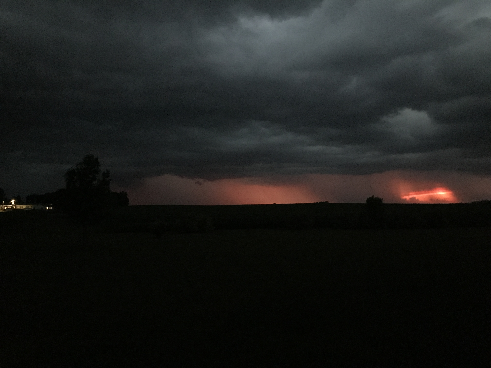
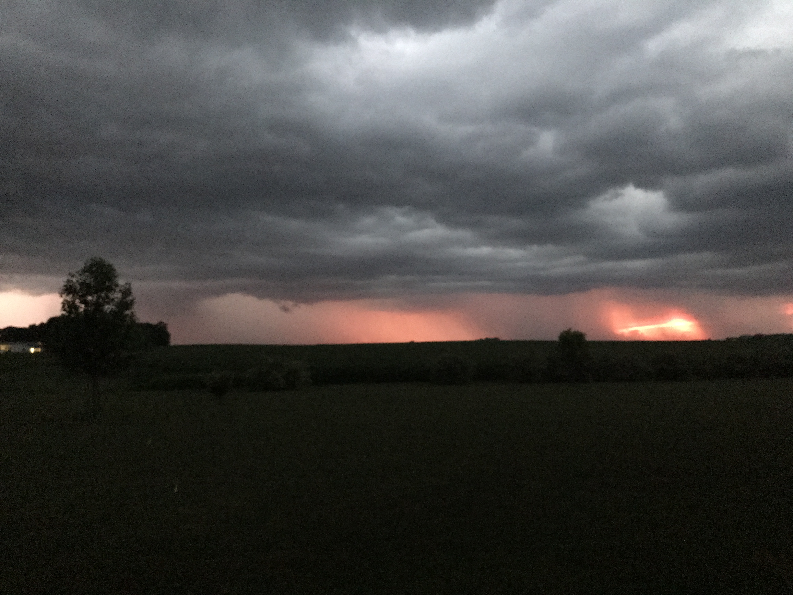
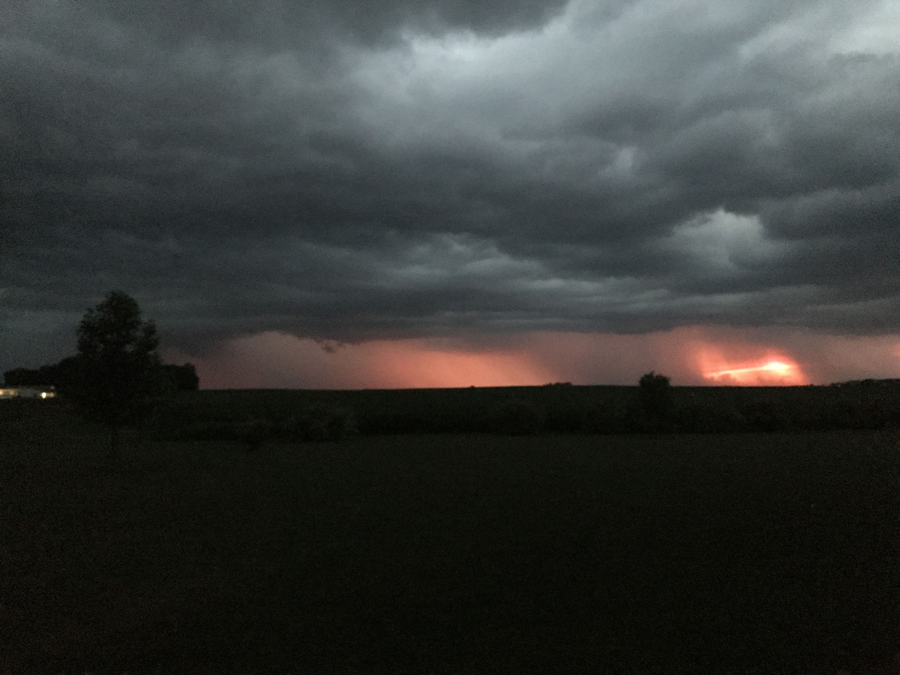
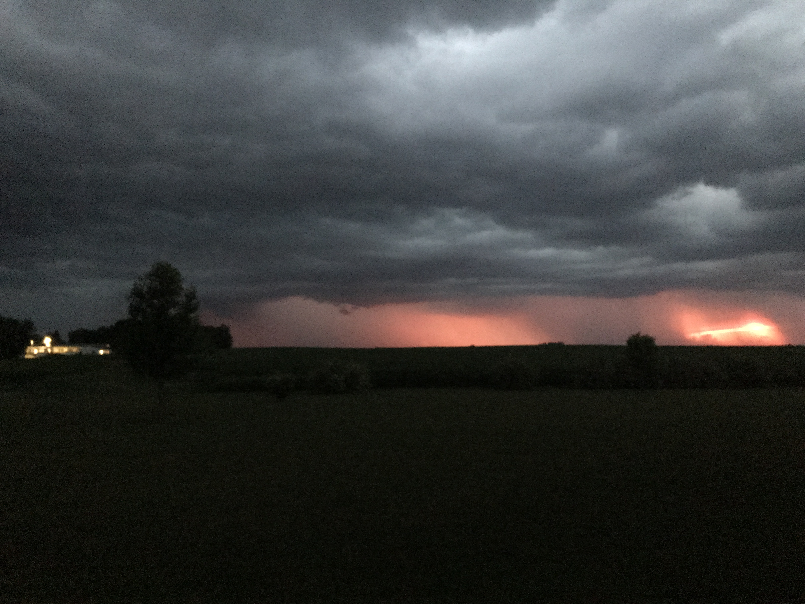
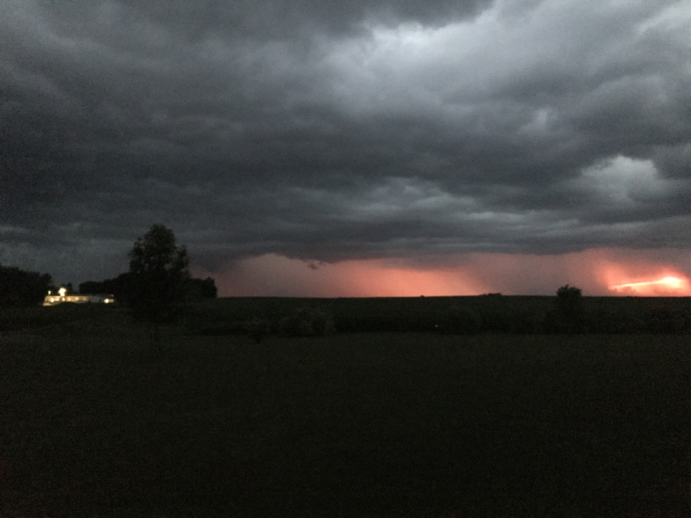
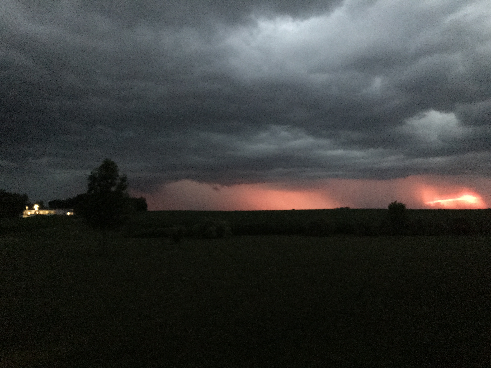
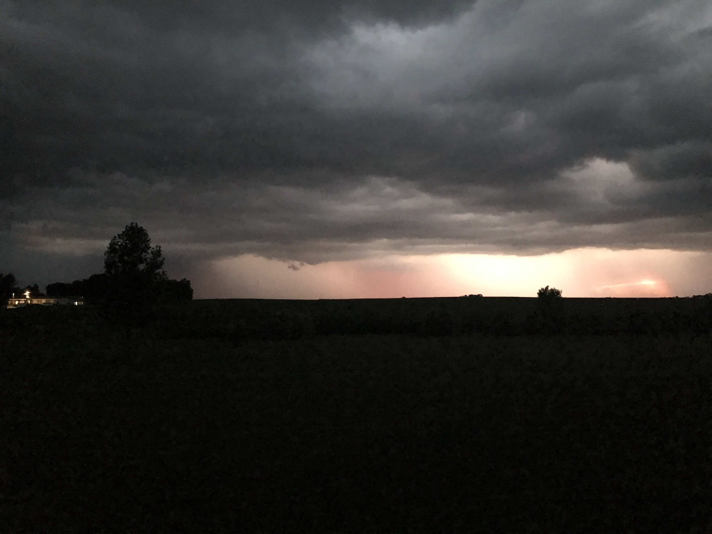

Topography

To understand the impact of wind on the Iowa, start at the origin of the land's topography. Iowa's landscape was formed over one million years ago. The glaciers left behind a smooth landscape. A moraine of abundant grasslands and shallow wetlands.
The Baxoje Tribe, the original inhabitants, named the terrain: IOWAY--'the beautiful land'.
Glaciers created the black, rich dirt--an ideal combination of silt, clay, and sand. The most fertile soil in the world.Loess Hills
In westernmost Iowa, the Loess Hills rise 200 feet above the flat plains forming a narrow band running north-south 200 miles along the Missouri River. The steep angles and sharp bluffs on the western side of the Loess Hills are in sharp contrast to the flat rectangular cropfields of the Missouri River flood plain. The extreme thickness of the loess layers and the intricately carved terrain of the Loess Hills make them a rare geologic feature. Today we know that loess was eolian (deposited by the wind). During the Ice Age, glaciers ground underlying rock into a fine powderlike sediment called "glacial flour." As temperatures warmed, sediment eventually deposited on flood plains downstream, eventually creating the Loess Hills.
Velocity

Wind is the flow of gases on a large scale. On the surface of the Earth, wind consists of the bulk movement of air. In outer space, solar wind is the movement of gases or charged particles from the Sun through space, while planetary wind is the outgassing of light chemical elements from a planet's atmosphere into space. Winds are commonly classified by their spatial scale, their speed, the types of forces that cause them, the regions in which they occur, and their effect. The strongest observed winds on a planet in the Solar System occur on Neptune and Saturn. Winds have various aspects, an important one being its velocity (wind speed); another the density of the gas involved; another its energy content or wind energy.
Tornado
|  | 
|  |  |
|  |  |  |  |
Wind is the flow of gases on a large scale. On the surface of the Earth, wind consists of the bulk movement of air. In outer space, solar wind is the movement of gases or charged particles from the Sun through space, while planetary wind is the outgassing of light chemical elements from a planet's atmosphere into space. Winds are commonly classified by their spatial scale, their speed, the types of forces that cause them, the regions in which they occur, and their effect. The strongest observed winds on a planet in the Solar System occur on Neptune and Saturn. Winds have various aspects, an important one being its velocity (wind speed); another the density of the gas involved; another its energy content or wind energy.